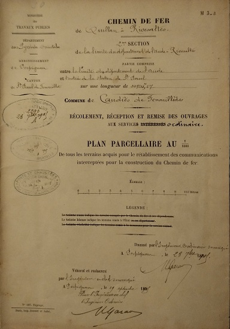

Saint Martin Lys
Bornage des terrains
Pyrénées orientales
Pour alléger la page sur l'historique de voie ferrée, je crée cette annexe avec les plans de bornage de la vallée de Saint Martin, collection de Paul Dumanois
cliquer l'image pour agrandir
Commune de Caudiès - plan de bornage


Plan parcellaire de Caudiès du 28 septembre 1905 - extrait - gare de Caudiès

Commune de Saint Paul de Fenouillet - plan de bornage

Plan au 1/10000 profil en travers de Saint Paul de Fenouillet du 18 février 1895 - extrait - gare
Commune de Maury - plan de bornage
Commune d'Estagel - plan de bornage

Commune de Calce - plan de bornage
Commune de Cases-de-Pène - plan de bornage

Autres plans de la collection non photographiés
Commentaires
Cliquer ici pour faire un Commentaire
Retour à l'accueil historique voie ferrée